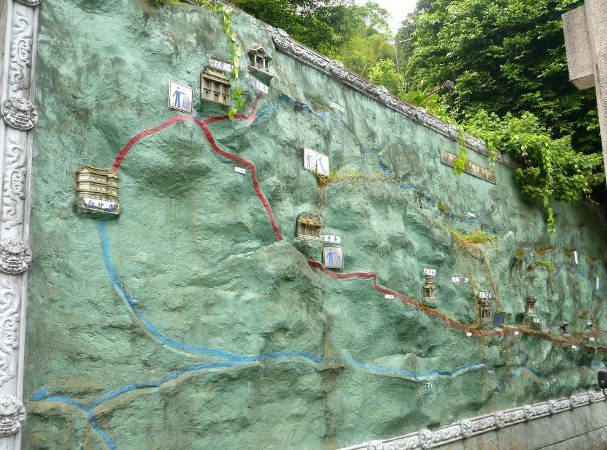
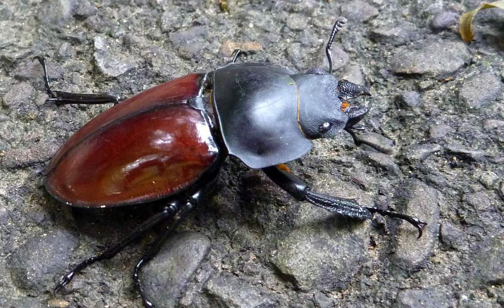
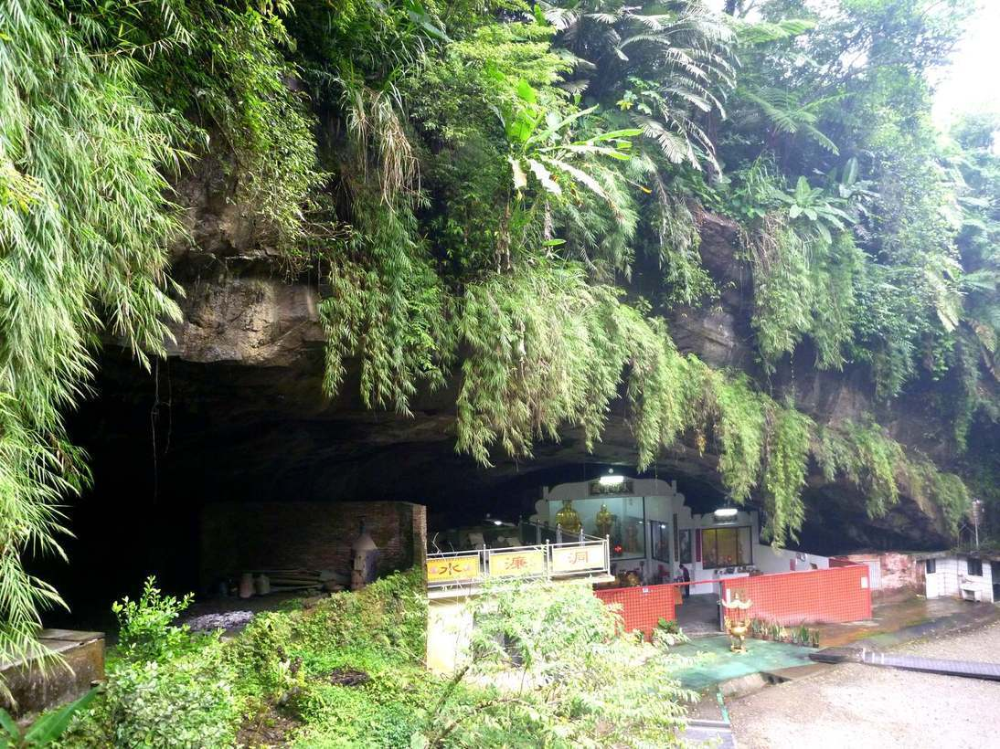

Go To Index of the Stixy Archive
Go To Main Index of the Big Back Yard Web Log
loading...

loading...
loading...
loading...

You don't see a lot of wildlife in Taiwan but I found some
loading...
loading...
loading...
loading...
loading...
loading...

I thought this a nice setting under a natural rock outcrop.
loading...
loading...
loading...
These many identical statues now seem to be slowly falling to neglect.
Dispatch 10l
Lions Head Mountain
20 Sep 2012
Go back to Dispatch
10k
Taiwan City Life Part 2
Go to Index
Go on to Dispatch 10m
Kinmen Island
(A very Millitary Island)
Go back to Dispatch
10k
Taiwan City Life Part 2
Go to Index
You can see these images and a few more in higher resolution here:
Lions head Mountain Web Album
It's considered a sacred mountain and is dotted with temples and shrines
of differing systems. This wall mural
shows some of the larger ones.